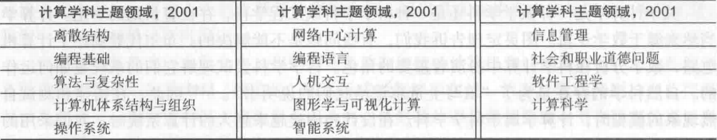

计算机科学概论
第一章 计算机全景
用户概念进化：
- 程序设计员：编写程序解决自己或者他人问题
- 系统程序员：为其他程序员编写越来越复杂的工具
- 计算机用户：应用程序员为广大非程序员用户编写用户友好的应用软件
2001年计算学科主题领域： 
第二章 二进制
第三章 数据表示法
二进制负数补码：negative(I) = 2 ^ k - I，或者按位取反加1（符号位不变）
ASCII (American Standard Code Information Interchange), 8位表示256种字符
Unicode字符集，一般16位，扩充非英文字母的符号，前256与ASCII保持一致
Huffman encoding：变长二进制串表示字符，使常用字符具有较短的编码
第四章 门与电路
第五章 计算部件
冯诺伊曼体系结构：
- 内存单元
- 算术逻辑单元(ALU, Arithmetic Logic Unit): 加减乘除/比较
- 寄存器(register)：现代ALU上的特殊存储单元
- 输入/输出单元(I/O Unit)
- 控制单元(control unit)：控制读取-执行周期
- 指令寄存器(IR, Instruction Register): 存放当前正在执行的指令的寄存器
- 程序计数器(PC, Program Counter): 存放下一条要执行的指令的地址的寄存器
ALU与控制单元合称中央处理器(CPU, Central Processing Unit)
第六章 程序设计语言
- 机器语言
- 汇编语言
- 高级语言
- 算法 -> 伪代码 -> 代码实现
第七章 问题求解与算法设计
- 如何解决问题
- 提出问题
- 寻找熟悉的情况
- 分治法
- 算法
计算机问题求解：
- 分析/说明问题
- 开发/测试算法：解决方案的逻辑方案
- 编码/测试：程序设计语言翻译算法
- 使用/维护
设计思想
- 信息隐蔽(information hiding): 高层设计时隐蔽低层的细节。这样低层细节的改变不会影响高层的设计。
- 抽象(abstraction)：抽象是信息隐蔽的结果